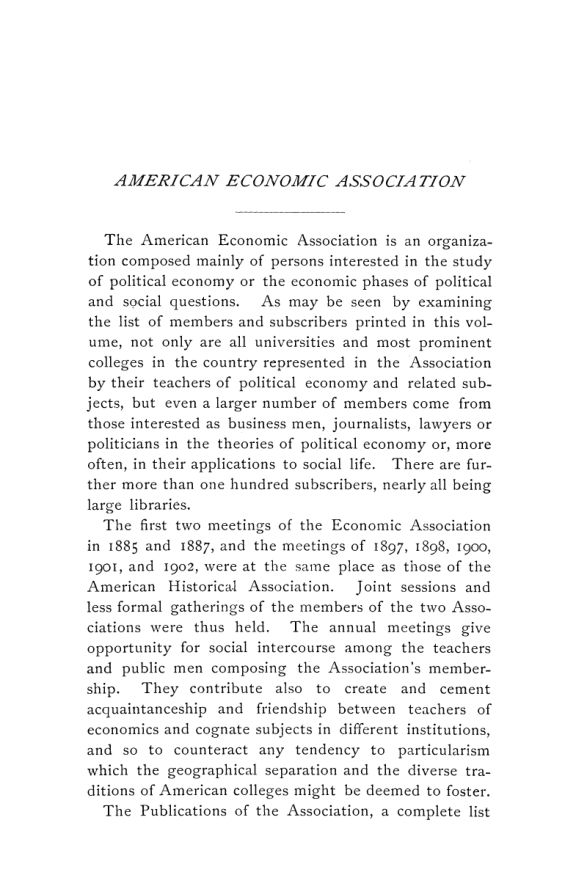

Filadélfia, 1902: fretes, salários, sindicatos e o papel do economista
Leitura: 6 min
Filadélfia, dezembro de 1902: Seligman defende a relatividade das leis econômicas, um regulador e um diretor de ferrovia disputam o poder sobre fretes, e Clark discute monopólio e salários.


Charles A. Prouty, membro da Interstate Commerce Commission, abriu a sessão da manhã de sábado, 27 de dezembro de 1902, com uma resposta curta ao tema que lhe haviam encomendado:
“…regulação nacional das ferrovias nos Estados Unidos. Não existe nenhuma.” (“…national regulation of railways in the United States. There is none.”)
A décima quinta reunião anual da American Economic Association se realizou em Filadélfia na sexta, no sábado e na segunda-feira, 26, 27 e 29 de dezembro de 1902. As sessões diurnas ocorreram no Houston Hall, da University of Pennsylvania; as noturnas, conjuntas com a American Historical Association, no Drexel Institute e no Griffith Hall. O programa teve seis sessões: o discurso presidencial, a regulação pública das ferrovias, teoria econômica, problemas e objetivos do trabalho organizado e problemas monetários do Oriente. Os anais saíram em fevereiro de 1903 como nº 1 do vol. 4 da terceira série.
O que o presidente esperava da ciência econômica?
Edwin R. A. Seligman abriu a reunião com “Economics and Social Progress”. Sua tese: a ciência econômica nasce das condições econômicas, e suas leis valem enquanto as condições se mantêm. Aplicou a ideia à história americana, tratando democracia, individualismo e escravidão como produtos do ambiente econômico, e enumerou seis traços que separariam a sociedade industrial de suas antecessoras, do esgotamento da terra livre ao ideal democrático. Daí uma conclusão otimista e um papel ampliado para o economista, que, sem medo nem favor, falaria por cima dos interesses de classe:
“É a criatura do passado; é a criadora do futuro.” (“It is the creature of the past; it is the creator of the future.”)
Quem deve fixar o preço do frete?
Prouty argumentou que as consolidações haviam trocado o problema da discriminação entre embarcadores pelo da tarifa excessiva, paga pelo consumidor e recebida pelo acionista. Propôs uma comissão especializada que revisasse as tarifas fixadas pelas ferrovias e um tribunal de comércio para executar suas ordens. Walker D. Hines, vice-presidente da Louisville and Nashville, respondeu que esse poder seria legislativo, escaparia ao controle judicial e não resolveria o corte secreto de tarifas.
Monopólio de capital e de trabalho segura os salários?
Na sessão de teoria, John B. Clark separou o padrão de salários, dado pela produtividade marginal, do salário efetivo, que o persegue com atraso, e comparou os dois a um rebocador e sua barcaça. Sustentou que sindicatos que restringem a entrada no ofício podem aliar-se a trustes para taxar o público, com a concorrência potencial como limite. John A. Hobson, de Londres, negou que o produto do trabalhador marginal possa ser medido. Em seguida, Charles W. Macfarlane criticou a distribuição de Clark por uma lei da renda, e Alvin S. Johnson, tutor em Columbia, respondeu que a divergência era sobretudo de termos.
Oficina sindical ou oficina aberta?
Na segunda-feira, o tema foi o trabalho organizado, com sindicalistas e empregadores na mesma mesa. Henry White, dos trabalhadores do vestuário, defendeu a oficina sindical como forma de democracia industrial; William H. Pfahler, ex-presidente da National Founders' Association, listou oito perigos que ela traria ao empregador. À tarde, George E. McNeill e Frank K. Foster expuseram os ideais sindicais, e Simeon B. Chase, gerente de fiação em Fall River, respondeu pelo lado da indústria.
Quem ganha quando a moeda cai?
Na última sessão, Jeremiah W. Jenks usou a experiência asiática para formular um princípio: o ganho que uma classe obtém com a queda ou a alta da moeda frente à de outro país é, em geral, compensado pela perda de outra. Na Índia, entre 1872 e 1893, a rupia caiu de cerca de dois xelins para menos de treze pence; ganharam os exportadores, perdeu o governo, com obrigações em ouro. Jenks aplicou o raciocínio às Filipinas, e Horace White comentou o projeto do senador Lodge para a moeda das ilhas.
O relatório do secretário Frank A. Fetter trouxe um marco administrativo: pela primeira vez, a associação passava de mil sócios. Seligman foi reeleito presidente, Fetter seguiu como secretário e tesoureiro, e a reunião seguinte foi marcada para Nova Orleans.
Na minha leitura
Na minha leitura, o debate ferroviário é o centro do volume, porque opõe dois desenhos institucionais ainda reconhecíveis. Prouty parte de um problema de ação coletiva: o custo excessivo do frete se dilui entre milhões de consumidores, e nenhum deles tem incentivo para litigar contra a ferrovia; daí a proposta de que o Estado assuma o processo, com um órgão técnico e um tribunal especializado. Hines aponta o risco simétrico: um regulador com poder amplo e pouca revisão judicial também pode errar, favorecer regiões e desorganizar preços relativos entre cidades. A pergunta de fundo, quem regula o regulador, não tem resposta definitiva; tem arranjos melhores ou piores de mandato, revisão e prazo.
A sessão de teoria toca no mesmo nervo por outro lado. Clark admite que trustes e sindicatos podem cobrar um tributo do público e confia na concorrência potencial como limite, desde que o Estado a preserve; Hobson duvida de que o limite funcione. A discussão monetária de Jenks completa o quadro com uma regra útil para qualquer época: mudança cambial redistribui antes de criar riqueza, e uma política monetária deve ser avaliada pelo efeito sobre cada classe, não só pelo agregado.
Glossário
- Interstate Commerce Commission
- comissão federal americana criada para supervisionar o transporte ferroviário entre estados.
- Maximum Rate Case
- decisão da Suprema Corte de 1897 que negou à comissão o poder de fixar tarifas máximas futuras.
- Corte secreto de tarifas
- desconto não publicado concedido por uma ferrovia a certos embarcadores, em desacordo com a tarifa oficial.
- Padrão de salários
- na formulação de Clark, o salário fixado pela produtividade marginal do trabalho em concorrência perfeita.
- Concorrência potencial
- ameaça de entrada de novos produtores ou trabalhadores, que limita o preço que um monopólio pode cobrar.
- Capital e bens de capital
- distinção de Clark entre o fundo permanente e móvel de valor e as máquinas e instrumentos concretos em que se encarna.
- Oficina sindical e oficina aberta
- a primeira emprega só sindicalizados; a segunda contrata sem distinguir filiação.
- Padrão-prata
- regime em que a moeda tem valor ligado à prata; com a queda do metal, a moeda se desvaloriza frente às de padrão-ouro.
Artigos desta edição
- American Economic Association — Manual da associação (pp. 5–41). Introdução, estatuto, regimento, dirigentes para 1903, conselho, lista de sócios e resumo de 1.008 sócios e assinantes em 1º de fevereiro de 1903. JSTOR
- The Fifteenth Annual Meeting — Relatório da reunião (pp. 42–51). Programa das seis sessões de 26, 27 e 29 de dezembro de 1902, lista de presentes, reuniões do conselho, relatórios do secretário e do tesoureiro, emenda ao estatuto, escolha de Nova Orleans para a reunião seguinte e resoluções. JSTOR
- Economics and Social Progress — Edwin R. A. Seligman; discurso presidencial (pp. 52–70). Seligman sustenta que a ciência econômica nasce das condições econômicas e que suas leis valem para estágios determinados do desenvolvimento. Aplica essa relatividade à história americana: democracia, individualismo e escravidão aparecem como produtos de terra livre e ambiente econômico, não de caráter nacional. Contra o pessimismo sobre luxo e plutocracia, aponta seis traços da sociedade industrial moderna: esgotamento da terra livre, predomínio do capital industrial, aplicação da ciência à produção, concorrência elevada a forma superior, opinião pública e ideal democrático. Conclui que a economia, criatura do passado, será criadora do futuro, com papel crescente na legislação. JSTOR
- National Regulation of Railways — Charles A. Prouty (Interstate Commerce Commission) (pp. 71–83). Prouty afirma que não existe regulação nacional das ferrovias, porque não há controle das tarifas interestaduais. Com as consolidações, o problema deixou de ser a discriminação entre embarcadores e passou a ser a cobrança de tarifas excessivas. Ilustra com fretes de grãos, feno e carvão antracito e argumenta que o consumidor paga e o acionista recebe. Defende uma comissão especializada que revise tarifas fixadas pelas ferrovias e um tribunal de comércio, com juízes vitalícios, para rever e executar suas ordens, em vez dos tribunais federais comuns. JSTOR
- Legislative Regulation of Railroad Rates — Walker D. Hines (Louisville and Nashville R. R.) (pp. 84–103). Hines, vice-presidente da Louisville and Nashville, examina a proposta de dar à Interstate Commerce Commission o poder de fixar tarifas, negado pela Suprema Corte no Maximum Rate Case, de 24 de maio de 1897. Sustenta que o novo poder seria legislativo e escaparia ao controle judicial, salvo em caso de confisco; que o corte secreto de tarifas, o mal mais sério, não seria resolvido por ele; e que a concorrência entre mercados mantém os fretes baixos. Defende o direito das ferrovias de partilhar a prosperidade e pede investigação antes de nova lei. JSTOR
- Public Regulation of Railroads-Discussion — Emory R. Johnson, Balthasar H. Meyer, J. Shirley Eaton, Max West, C. S. Walker, Frederick C. Clark, Charles W. Mixter, Theodore Marburg, Henry B. Gardner, Walker D. Hines e Charles A. Prouty (pp. 104–129). Johnson sustenta que as discriminações entre classes de tráfego e localidades, e não a extorsão, continuam o problema central; Meyer e outros discutem o alcance da regulação; Hines e Prouty respondem. JSTOR
- The Dynamics of the Wages Question — John B. Clark (Columbia University) (pp. 130–142). Clark distingue o padrão de salários, fixado pela produtividade marginal do trabalho e em alta, do salário efetivo, que o persegue com atraso. O intervalo entre os dois gera o lucro do empresário e o incentivo à invenção, como o cabo entre rebocador e barcaça. Com quatro gráficos, compara o efeito de monopólios, patentes e consolidações. Em oito teses, argumenta que sindicatos que restringem a entrada no ofício e a produção podem aliar-se a trustes para taxar o público, e que o limite desse ganho é a concorrência potencial, que depende de regulação efetiva do Estado. JSTOR
- The Dynamics of the Wages Question-Discussion — John A. Hobson, Thomas N. Carver, Edward A. Ross e John B. Clark (pp. 143–153). Hobson nega que se possa medir o produto específico do trabalhador marginal e duvida do limite natural ao monopólio; Carver defende e critica a teoria da produtividade; Ross intervém; Clark responde. JSTOR
- Distribution by a Law of Rent — Charles W. Macfarlane (Filadélfia) (pp. 154–165). Macfarlane elogia a distinção de Clark entre capital, fundo permanente e móvel, e bens de capital, suas formas concretas, mas aponta falta de correspondência entre premissas e conclusões. Os diagramas em que Clark apresenta juros e salários como excedentes diferenciais, semelhantes à renda, supõem acréscimos sucessivos de trabalho a um capital fixo e mudança na forma dos instrumentos, isto é, condições dinâmicas. Nesse caso, argumenta, os diagramas deveriam conter o lucro puro, e o ganho diferencial viria das formas concretas do capital, não do fundo homogêneo. JSTOR
- Distribution by a Law of Rent-Discussion — Alvin S. Johnson, Simon N. Patten, Mr. Swift e Charles W. Macfarlane (pp. 166–172). Johnson sustenta que a diferença entre Macfarlane e Clark é sobretudo de termos; Patten trata a questão historicamente, a partir das três classes inglesas; Macfarlane responde que não se trata de definições. JSTOR
- The Union and the Open Shop — Henry White (United Garment Workers of America) (pp. 173–182). White, secretário do sindicato dos trabalhadores do vestuário, descreve o movimento sindical como esforço da classe trabalhadora por representação e por democracia industrial, não como resposta temporária a maus patrões. Sustenta que a oficina parcialmente organizada é insustentável, porque o não sindicalizado frustra a ação coletiva, e que a melhor situação é a de dois lados fortes, favorável à arbitragem. Reconhece que excluir trabalhadores é poder de caráter público, sujeito a regras de apelação, condena a violência e compara a democracia a um mar tempestuoso, preferível à calmaria da sujeição. JSTOR
- Free Shops for Free Men — William H. Pfahler (ex-presidente da National Founders' Association) (pp. 183–189). Pfahler define a oficina aberta como reação do empregador à exigência de contratar só sindicalizados e diz que a objeção não é à organização do trabalho, mas a seus métodos e ao sigilo. Enumera oito perigos da oficina sindical, entre eles a perda da escolha dos empregados, o limite de aprendizes, a oposição a máquinas e a limitação da produção. Admite que empregadores que se recusam a negociar são os melhores recrutadores dos sindicatos e prevê uma união entre capital e trabalho sem necessidade de imposição. JSTOR
- Problems of Organized Labor-Discussion — Samuel B. Donnelly, Ernest F. Du Brul, John E. George, Isaac Hourwich, Hugo Bilgram, Stuart Wood, John A. Hobson, Delmer E. Hawkins, Frank O'Connor, E. Dana Durand, William Z. Ripley e Henry White (pp. 190–210). Donnelly, ex-presidente da Typographical Union nº 6, contesta o retrato da oficina aberta e classifica os não sindicalizados; White responde a Du Brul enumerando os frutos do sindicalismo. JSTOR
- Trade Union Ideals — George E. McNeill (Boston) e Frank K. Foster (Massachusetts Federation of Labor) (pp. 211–247). Dois trabalhos. McNeill chama os sindicatos de democracias dos pobres, compara sistemas financeiros de duas uniões nacionais, recorre a imagens religiosas e defende jornadas de oito ou seis horas e o fim do trabalho monótono. Foster, presidente do comitê legislativo da federação de Massachusetts, define o sindicalismo como oportunista e prático: lista conquistas como jornada menor, salários maiores, combate ao trabalho infantil e seguro aos membros; registra mais de cinco milhões de sindicalizados entre os povos de língua inglesa; e sustenta que os ideais sindicais não diferem dos da humanidade civilizada. JSTOR
- Trade Union Ideals-Discussion — Simeon B. Chase, Jesse E. Pope, Hugo Bilgram, Thomas N. Carver, Mr. Swift, Delmer E. Hawkins, C. S. Walker, A. W. Flux, Theodore Marburg, Mr. Grigg, Henry W. Farnam, Isaac Hourwich, Ernest F. Du Brul e Frank K. Foster (pp. 248–268). Chase, gerente de fiação em Fall River, contrapõe a prática sindical aos ideais expostos; seguem intervenções de economistas e empregadores e a resposta de Foster. JSTOR
- Currency Problems in the Orient — Jeremiah W. Jenks (Cornell University) (pp. 269–279). Jenks usa a variedade de sistemas monetários da Ásia para examinar quem ganha e quem perde com a variação cambial. Na Índia, a rupia caiu de cerca de dois xelins para menos de treze pence entre 1872 e 1893; exportadores ganharam, e o governo, com dívida em ouro, perdeu. O princípio: o ganho de uma classe com moeda em queda ou alta é, em geral, compensado pela perda de outra. Compara Ceilão, Estados Malaios, Sumatra e Java e aplica o raciocínio às Filipinas, onde os perdedores seriam os filipinos e o governo. JSTOR
- Currency Problems in the Orient-Discussion — Charles A. Conant, G. Bruce Webster, Horace White e Jeremiah W. Jenks (pp. 280–295). Conant vê na queda da prata uma crise de câmbio mundial e rejeita o bimetalismo internacional; Webster defende a prata para os filipinos; Horace White comenta o projeto do senador Lodge para a moeda das ilhas. JSTOR
Fontes
- American Economic Association (pp. 5–41). JSTOR · Internet Archive (PDF)
- The Fifteenth Annual Meeting (pp. 42–51). JSTOR · Internet Archive (PDF)
- Economics and Social Progress (pp. 52–70). JSTOR · Internet Archive (PDF)
- National Regulation of Railways (pp. 71–83). JSTOR · Internet Archive (PDF)
- Legislative Regulation of Railroad Rates (pp. 84–103). JSTOR · Internet Archive (PDF)
- Public Regulation of Railroads-Discussion (pp. 104–129). JSTOR · Internet Archive (PDF)
- The Dynamics of the Wages Question (pp. 130–142). JSTOR · Internet Archive (PDF)
- The Dynamics of the Wages Question-Discussion (pp. 143–153). JSTOR · Internet Archive (PDF)
- Distribution by a Law of Rent (pp. 154–165). JSTOR · Internet Archive (PDF)
- Distribution by a Law of Rent-Discussion (pp. 166–172). JSTOR · Internet Archive (PDF)
- The Union and the Open Shop (pp. 173–182). JSTOR · Internet Archive (PDF)
- Free Shops for Free Men (pp. 183–189). JSTOR · Internet Archive (PDF)
- Problems of Organized Labor-Discussion (pp. 190–210). JSTOR · Internet Archive (PDF)
- Trade Union Ideals (pp. 211–247). JSTOR · Internet Archive (PDF)
- Trade Union Ideals-Discussion (pp. 248–268). JSTOR · Internet Archive (PDF)
- Currency Problems in the Orient (pp. 269–279). JSTOR · Internet Archive (PDF)
- Currency Problems in the Orient-Discussion (pp. 280–295). JSTOR · Internet Archive (PDF)
- Sumário da edição no JSTOR: Publications of the American Economic Association, 3ª série, vol. 4, nº 1.
Documento em domínio público (EUA, publicado antes de 1931), via JSTOR Early Journal Content e Internet Archive. Resumo e comentário do autor deste site, sem afiliação com a American Economic Association. Encontrou um erro? Escreva: a correção é publicada no próprio texto, com data.
← Nº 64 · Johnson, 1902: a renda da terra é uma renda como as outras? Nº 66 · Bushee, 1903: moradia, trabalho e mortalidade na Boston imigrante →